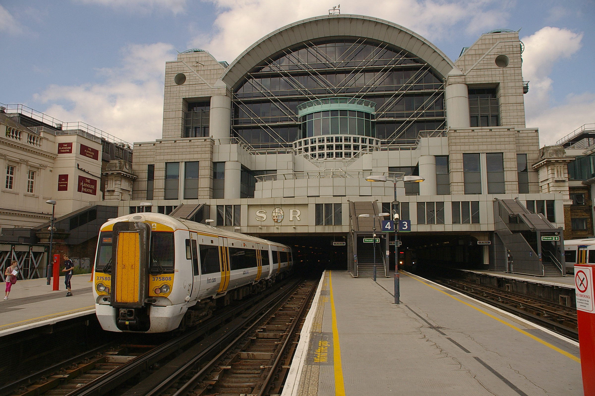
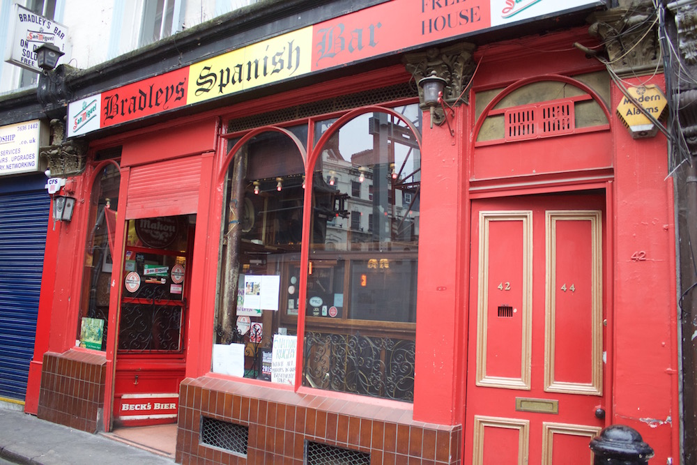
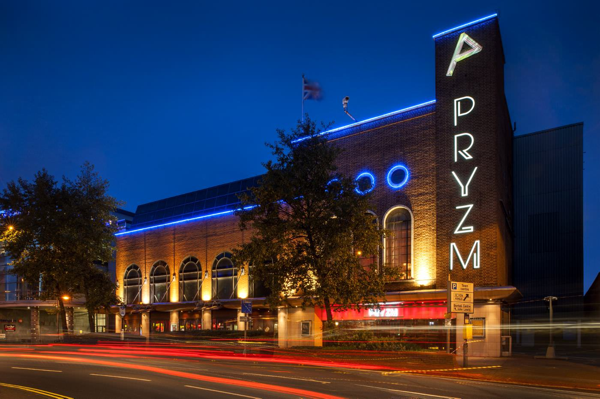
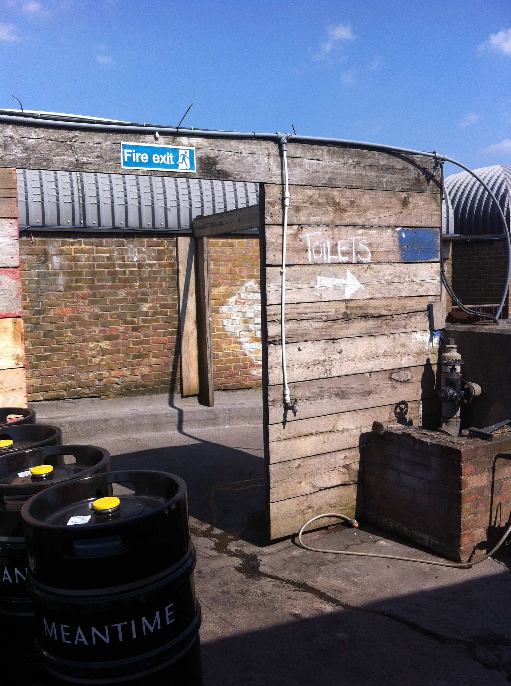
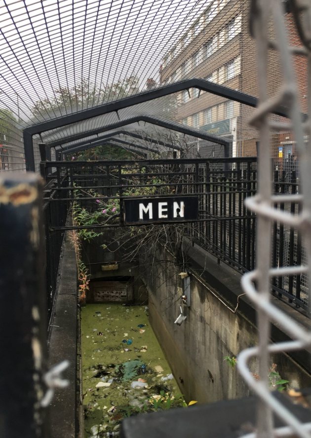

The most expensive public toilet in London: 50p per use, entry only with exact change. Despite this fee, the toilets are understaffed, often dirty and full of exhausted and angry commuters
Named as the worst loo in the capital by The Londonist magazine's recent poll, one Yelp reviewer describes them as "interestingly squashy"
Avoid at all cost - 40% Trip Advisor reviewers single out these toilets as ruining their cinema experience, labelling them a "disgrace to mankind" and "health hazard to the general public", with rumours of "HUGE rats!" running through corridors outside
In the words of one Vice reporter, "the toilets were dirty, urine on the floor and up the seats, spiders and cob webs in the corners, toilet paper all over the floor, stunk of urine, and cocaine traces all over the toilet roll dispenser! Disgusted!"
The replacement of the notorious Oceana, pay a visit to PRYZM and you'll have to wait up to 30 minutes to even enter the loos, only to be greeted by lack of loo roll and vomiting - made even worse by the trek to Zone 6 and reports of the racism and physical aggression amongst club staff
South London's best view comes at a price - the toilets here are vertigo-inducing wooden pits, rarely equipped with loo roll, accompanied by frequently faulty taps. The stench increases as the heat rises during summer.
With an ongoing dispute between local council and a private landowner over whose responsibility this loo is to clean, rainwater has completely flooded the stairs and turned these public loos into a swamp. According to the the Hackney Gazette there are "trees growing out of the ladies" and the steps to the gents thick with duckweed"
Our contender for the worst toilets in London - queues have been known to stretch to 30 minutes, with the smell and mess once you get inside worse than festival loos